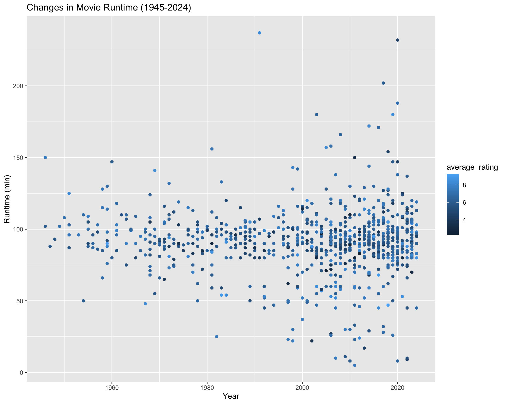

For this analysis, I’ll be looking at the length of movies with the word “Summer” in the title that have been produced between 1945 and the 2020’s. I’ll also be investigating the relationship between movie length and audience reactions - measured through ratings. I hope to draw conclusions about potential changes in audience engagement and preferences.
Data and Libraries
The data being used for this plot was originally collected by The Internet Movie Database, or IMDB, a hub for networking and news in the motion picture sector. Used for Tidy Tuesday in July of 2024 to investigate the relationships between TV shows and movies with the word “summer” in their titles – this data contains 905 rows of different movies and TV shows, and 10 columns specifying the details of said movies. For today, the relevant columns are year, runtime, and rating.
Here is a sneak peek at the original data.
# Loading in data and displaying first 10 rowssummer_movies <- readr::read_csv('https://raw.githubusercontent.com/rfordatascience/tidytuesday/main/data/2024/2024-07-30/summer_movies.csv')head(summer_movies, 10)
# A tibble: 10 × 10
tconst title_type primary_title original_title year runtime_minutes genres
<chr> <chr> <chr> <chr> <dbl> <dbl> <chr>
1 tt00114… movie Midsummer Ma… Midsummer Mad… 1920 60 Drama
2 tt00267… movie A Midsummer … A Midsummer N… 1935 133 Comed…
3 tt00338… movie The Teachers… Magistrarna p… 1941 86 Comedy
4 tt00373… movie Summer Storm Summer Storm 1944 106 Crime…
5 tt00384… movie Centennial S… Centennial Su… 1946 102 Histo…
6 tt00387… tvMovie A Midsummer … A Midsummer N… 1946 150 Drama…
7 tt00393… movie One Swallow … En fluga gör … 1947 88 Comedy
8 tt00408… movie Summer Holid… Summer Holiday 1948 93 Music…
9 tt00415… movie In the Good … In the Good O… 1949 102 Comed…
10 tt00429… movie Bountiful Su… Shchedroe leto 1951 87 Comed…
# ℹ 3 more variables: simple_title <chr>, average_rating <dbl>, num_votes <dbl>
Plotting

This is a scatterplot that displays changes in the length of movies, as well as the ratings for said movies, since 1945. Ratings are out of ten, and colored according to where they fall on that scale; run time is used to measure the movies’ length in minutes.
Conclusons and Observations
From this plot, we can see that the range of movie run times have increased dramatically since the 40’s, along with the actual number of movies available, likely due to increased access to production materials, especially going into the 2000’s. Ratings remain relatively diverse across time up until the 2000’s, where a sweet spot between 75 minutes and 125 minutes began to be filled with many more movies; this could be related to a simultaneous increase in access to productoin tools and growth of ‘trendiness’ in contemporary Hollywood films.